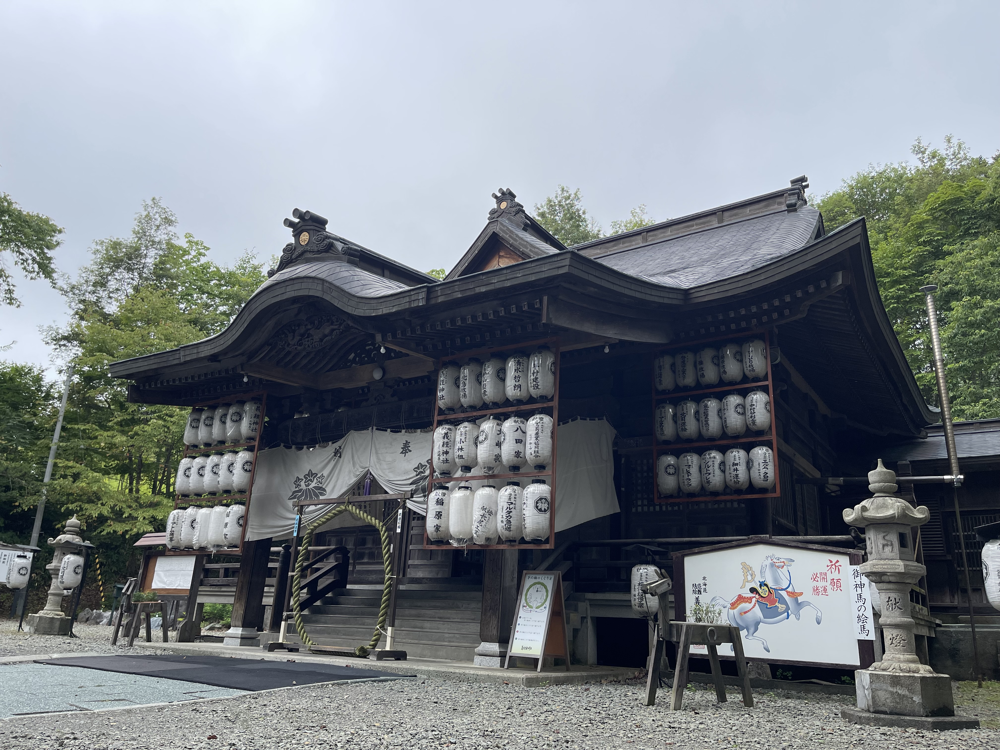
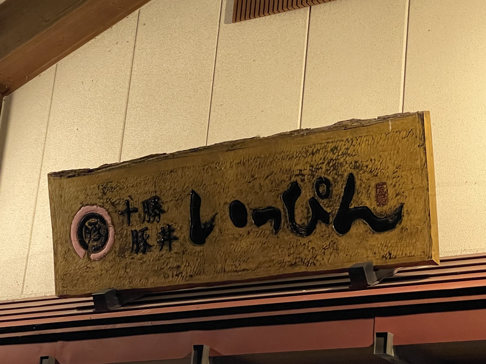

朝、苫小牧西港に着いた。フェリーを降りると北海道の空気が全身に来る。湿度が低い。空が広い。バイクをフェリー甲板から出して、そのままエンジンをかけると「北海道に来た」という実感がようやく湧いてくる。
義経神社
帯広へ向かう前に、平取町へ立ち寄った。国道237号を走っていると、義経神社の鳥居が見えてくる。源義経が生き延びて蝦夷地に渡ったという伝説があり、その義経を祀った神社が平取町に建てられている。
訪れた日はちょうどお盆の時期。境内には無数の提灯が飾られていた。


平取町立二風谷アイヌ文化博物館
義経神社からさらに走ると、二風谷（ニブタニ）に着く。平取町立二風谷アイヌ文化博物館は、アイヌ文化の伝承地として知られるこの地域に建てられた博物館だ。アイヌの生活道具や衣装、工芸品が展示されている。ウポポイのような大規模な国立施設とは違い、地域に根ざした落ち着いた雰囲気の博物館だった。
帯広 — 十勝豚丼「いっぴん」
白老から東へ走り、帯広へ。北海道ツーリングの目的のひとつに「十勝豚丼を食べる」があった。帯広は豚丼発祥の地として知られており、市内には名店が集まっている。
向かったのは十勝豚丼 いっぴん。看板の文字がどっしりしていて、老舗感が出ている。

豚丼は甘辛のタレが炭火焼きの豚肉に絡んで、ご飯が進む味。シンプルな一品だけど、これは北海道の食だと感じる。帯広ではもう一軒行きたいくらいだったが、まだ先は長い。今日の宿は帯広市内で、明日からいよいよ道東へ向かう。
今日立ち寄った場所
1
義経神社
北海道沙流郡平取町本町119 / 源義経を祀った神社。国道237号沿い。無料。
2
平取町立二風谷アイヌ文化博物館
北海道沙流郡平取町二風谷55 / アイヌ文化の伝承地・二風谷に建てられた地域博物館。
3
十勝豚丼 いっぴん
北海道帯広市西1条南11丁目19 / 帯広を代表する豚丼専門店。テイクアウトも可。